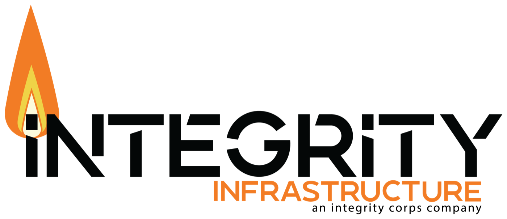
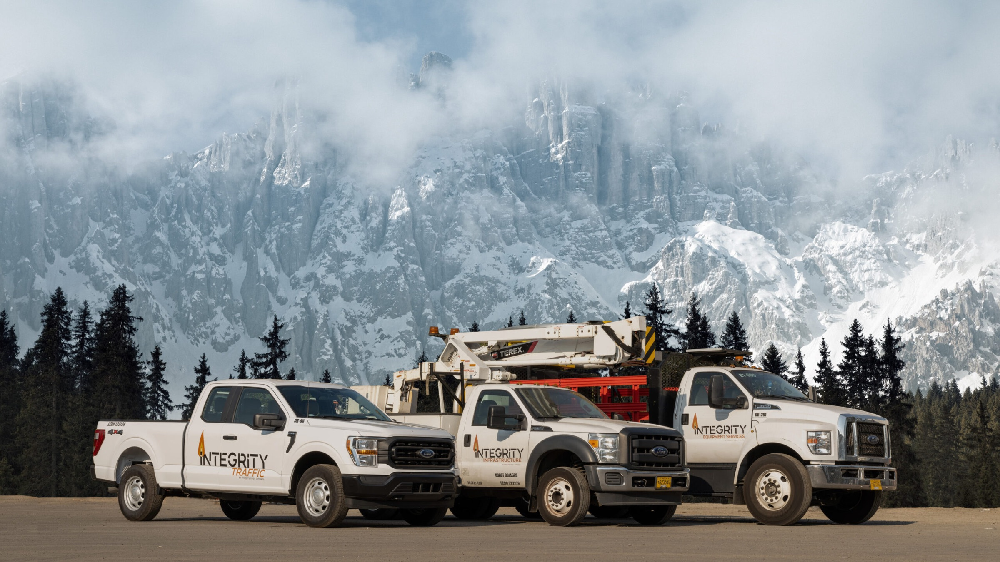

Concept C, backup
Crew
Light and people-first. One bold orange field per page, 16px media, pill actions, crew photography and the Ways of BEING up front.
Variance 6 / Motion 4 / Density 3

Soft, never round. Pills for actions and tags, 16px for cards and media, 8px for fields.
Construction
Digital

Build by building people.
Brand essenceBrand orange #E87722One field per page
Surface#FAF9F6
Ink17.0:1
Orange text#A44C0F
FlameHighlights only
Be generous. Be accountable.
Montserrat 700, with 300 for contrast
Labels in sentence case
Type

Image: people and hands at work, warm and close
Request a quoteView open roles
Now hiringCentennial, CO